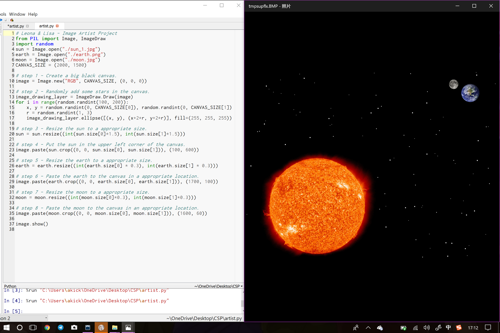

There are 8 changes:
Create a big black canvas.
Randomly add some stars in the canvas.
Resize the sun to an appropriate size.
Put the sun in the upper left corner of the canvas.
Resize the earth to an appropriate size.
Paste the earth to the canvas in an appropriate location.
Resize the moon to an appropriate size.
Paste the resized moon to the canvas in an appropriate location.
And there is the generated picture:
There is the source code:
